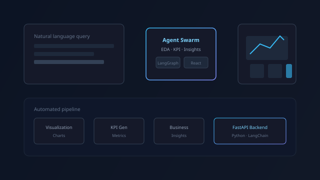
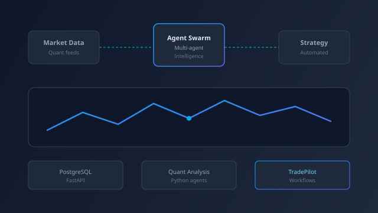
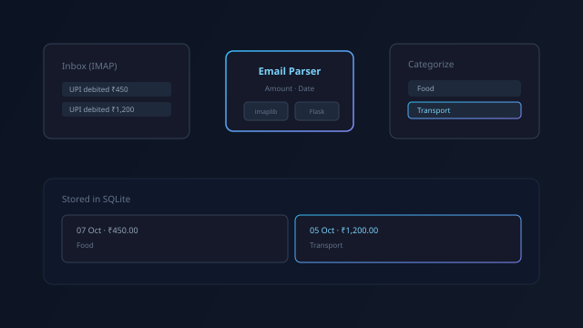

Lead AI/ML Engineer building agentic systems that ship.
I design and deliver multi-agent platforms, RAG pipelines, and LLM-driven automation — the kind that run in production, not just in demos. Currently leading AI engineering at Travancore Analytics.
I build AI systems that hold up under real use.
I'm an AI/ML engineer with over 5 years of experience designing intelligent systems — from multi-agent LLM platforms to computer vision pipelines. I currently lead AI engineering at Travancore Analytics, where I own architecture, model integration, and delivery across a portfolio of production AI products.
My focus is on systems that survive contact with real users: agentic pipelines that stay reliable at scale, RAG assistants that don't hallucinate their way out of trust, and automation that measurably cuts manual work rather than just looking impressive in a demo. Outside client work, I build and ship personal projects end-to-end — including an algorithmic trading system spanning quant research to live execution.
-
01
Architecture & delivery ownership
I lead system design end-to-end — from architecture decisions to production deployment — not just model integration.
-
02
Agentic & RAG systems
Multi-agent orchestration with LangChain/LangGraph, grounded in retrieval pipelines that stay accurate as knowledge bases grow.
-
03
Mentorship & code quality
I review code and mentor engineers on LangChain/LangGraph patterns, keeping teams moving without sacrificing reliability.
-
04
Full-stack when it matters
Comfortable owning a project from FastAPI backend to React frontend when a product needs one builder end-to-end.
Where I've built it
Current
- Lead architecture and delivery across 5+ production AI platforms, including a multi-agent analytics assistant, an NL-to-SQL agentic system, and a metadata-driven code generator for clinical trials.
- Architected and shipped an agentic SQL query platform achieving 95% production reliability, integrating RAG over a vector database for grounded insight generation.
- Built a metadata-to-code generation pipeline (SAS/R) that cut biostatisticians' manual coding effort by 80%.
- Lead code reviews and mentor engineers on LangChain/LangGraph integration; own architectural documentation and feature roadmaps.
- Built deep learning document readers (OpenCV + YOLO + Tesseract) and face recognition/liveness detection systems for secure web-based attendance.
- Led migration of a production data pipeline from MongoDB to PostgreSQL, improving scalability and analytics performance.
- Optimized ETL processes and SQL queries, reducing processing time by 10%, and shipped interactive dashboards (Tableau, Metabase, Superset) into a Flask web application.
- Processed and analyzed large datasets with Apache Spark/Hadoop; applied classical ML and deep learning (CNN, YOLO) to computer vision problems.
- Built face detection/recognition models with OpenCV and delivered exploratory data analysis and visualization work.
Systems I've designed and shipped
A mix of production platforms built at Travancore Analytics and personal systems built end-to-end, solo.

DataLens — AI data intelligence platform
A live product that turns raw data into executive-ready insight. Connect a spreadsheet, CSV, or a database (MySQL, Postgres, MongoDB) and a multi-agent pipeline cleans, enriches, and analyzes it — producing a verified report with priorities, risks, key metrics, and charts, plus a conversational chatbot for follow-up questions in plain language.

Algorithmic trading system — research to live execution
A full-stack trading app connected to Zerodha Kite for live NSE quotes, multi-user auth, and order execution, paired with a LangGraph agent pipeline (news research → strategy planning → risk-gated Buy/Sell/Hold) and a standalone quant engine that screens the NIFTY 500 through market-regime, liquidity, factor, and technical-setup filters to produce a ranked shortlist.

FinTrack — automated expense tracking
A finance tracker that reads UPI transaction emails straight from your inbox over IMAP, parses out the amount and date, and lets you categorize spending — no manual entry required. Paired with a mobile app for logging and reviewing transactions on the go.
Let's talk.
Have a project in mind, a question, or just want to connect? Reach out — I'd like to hear from you.